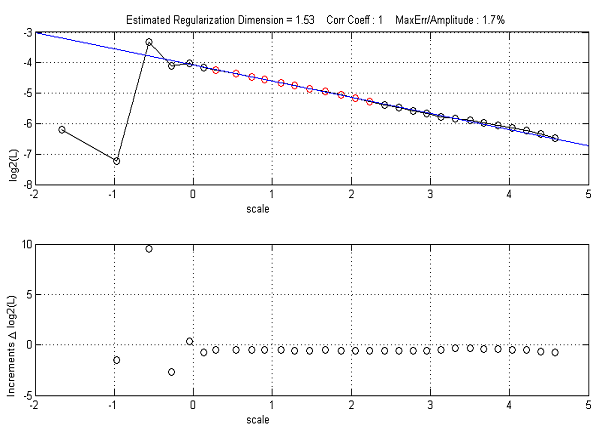
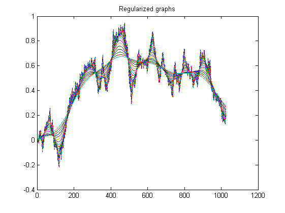

| FRACLAB Functions |
|
Estimates the Regularization Dimension of a 1D signal
regdim1d(x,bounds,voices)
regdim1d(...,'Regression type')
regdim1d(...,'Kernel type')
regdim1d(...,'Propertyname',Propertyvalue)
ZZ = regdim1d(...)
regdim1d(x,bounds,voices) Estimates the regularization dimension of the input signal x, using a Gaussian kernel and a least square regression. The vector bounds represents the minimum and maximum standard deviations (in number of samples) for the smoothing kernel. The parameter voices is the number of intermediate sizes for the standard deviation, or more generally the width of the kernel, between the smallest and largest ones.
|
A graphic window is displayed showing the regression performed using all the points of the range scale |
regdim1d(...,'Regression type') Estimates the regularization dimension using a specific type of regression. The Regression Type can be choosen from the list below :
| Specifier | Regression Type |
|---|---|
| 'ls' | Least Square (default) |
| 'linf' | Lower Limit |
| 'lsup' | Upper Limit |
| 'ml' | Maximum Likelihood |
| 'lapls' | Lepskii Adaptive |
| 'wls' | Weighted Least Square |
| 'pls' | Penalized Least Square |
regdim1d(...,'Kernel type') Estimates the regularization dimension using a specific type of smoothing kernel. The Kernel Type can be choosen from the list below :
| Specifier | Kernel Type |
|---|---|
| 'gauss' | Gaussian (default) |
| 'rect' | Rectangle |
regdim1d(...,'Propertyname',Propertyvalue) Estimates the regularization dimension applying the specified property settings. The property setting can be choosen from the list below :
| Property | Purpose |
|---|---|
| 'noise' |
The estimation of the regularization dimension is computed when the data are contaminated with an additive
white Gaussian noise with a given standard deviation, STD. |
ZZ = regdim1d(...) Estimates the regularization dimension and displays a figure showing the regularized graphs, ZZ.
N = 1024; H = 0.5;
x = fbmwoodchan(N,H);
regdim1d(x,[5,512],32);

N = 1024; H = 0.5;
x = fbmwoodchan(N,H);
z = regdim1d(x,[5,512],32);

[1] F. Roueff, J. Lévy-Véhel, "A regularization approach to fractional dimension estimation",
Fractals 98, (1998).
| |
pseudoaw | regdim2d | |